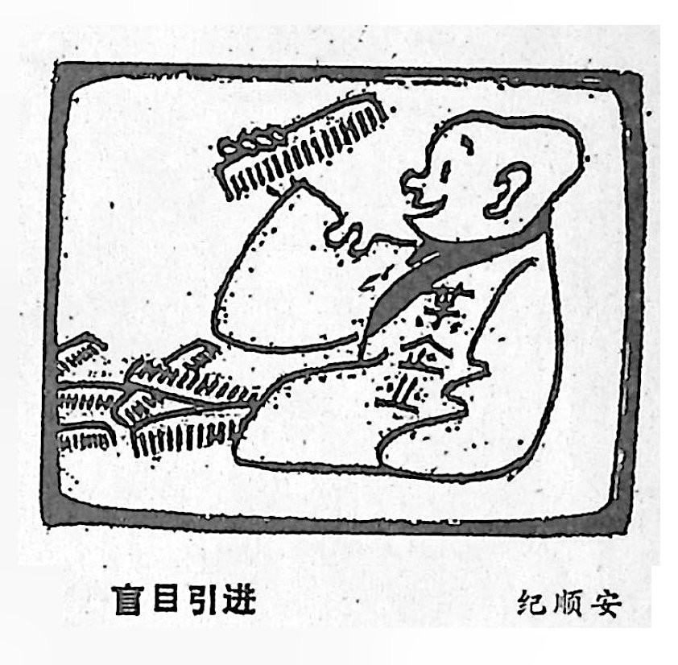

纪顺安 《人事》1987年第2期（总第17期），封三
盲目引进
Blind Importing
- Text in the drawing
- 某企业
A certain enterprise - Description
- A bald, contented figure labeled “a certain enterprise” runs an enormous comb over his hairless scalp, with a pile of further combs beside him.
- Note
- 引进, “importing” foreign technology and equipment, was the watchword of the decade; the cartoon mocks purchases made with no use for them.
- Artist
- Ji Shunan 纪顺安
- Published in
- 《人事》1987年第2期（总第17期）, inside back cover
- Themes
- Reform and its implementation

Cite
Ji Shunan, “盲目引进” [Blind Importing], Renshi (Personnel) 《人事》, 1987, no. 2, inside back cover.